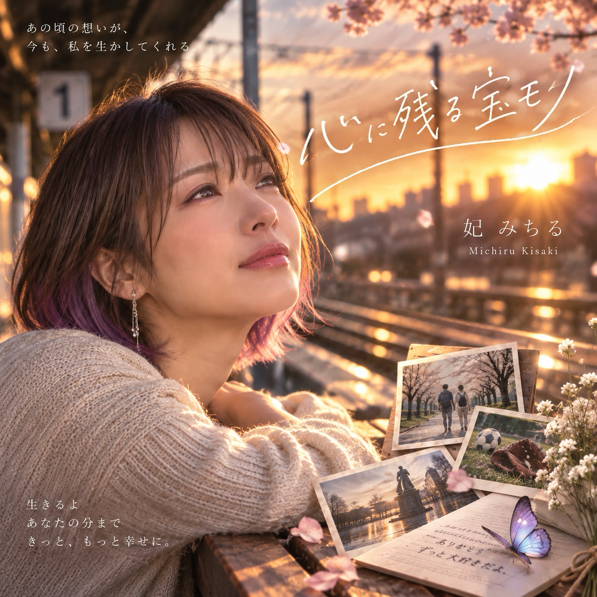
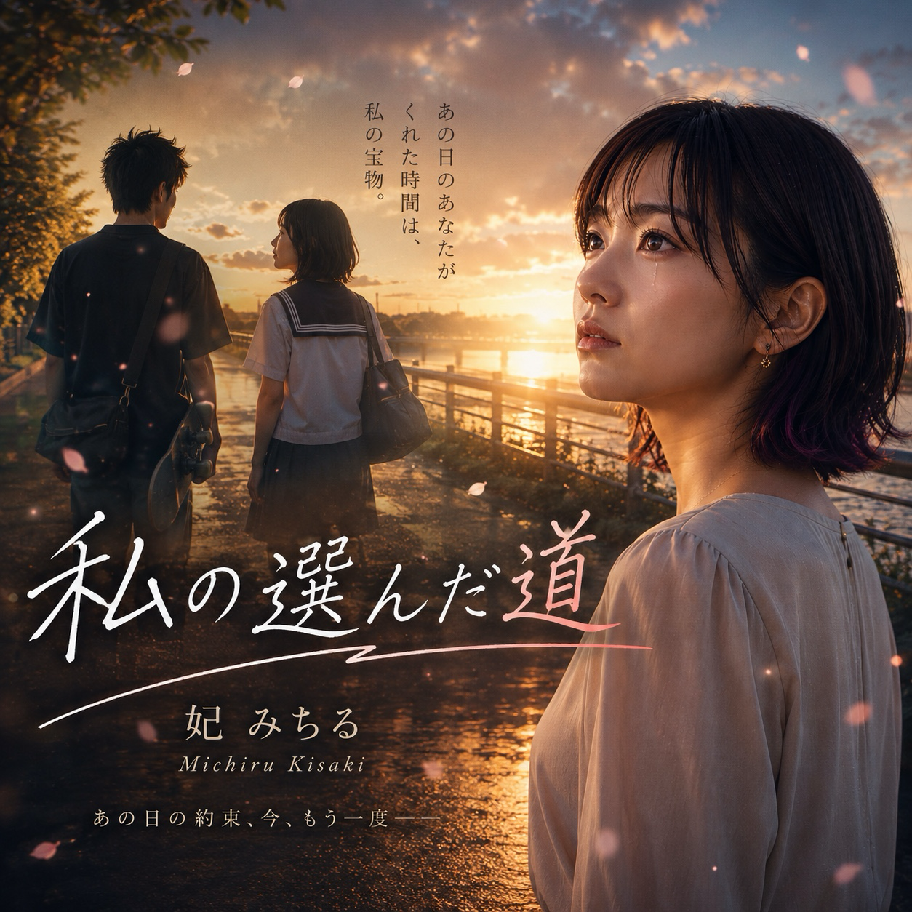

SUZUKA Original AI Artist / Solo
妃みちる
妃みちる
9月8日生まれ、30歳のSUZUKAソロAIアーティスト。
- 誕生日
- 9月8日
- 年齢
- 30歳
- 外見プロフィール
- 自然なダークブラウンのショートボブ / 毛先だけ落ち着いた紫色
世界観
過去の大切な人への感謝と、今の幸せを見つめる物語。
音楽性
最新曲「世代を超えてママへ」をはじめ、人生、家族、恋や友情の物語を届ける。
J-POP / アコースティック / サマーソング / バラード / 応援歌
最新曲
SUZUKAおすすめ
初めて聴くなら、この3曲
正本のfeatured・代表設定・recommendationWeight・公開日の順で決定的に選んでいます。実人気順位ではありません。
公開作品一覧





Streaming Release
STREAMING RELEASE · NOW STREAMING / 配信開始
STREAMING RELEASE · NOW STREAMING / 配信開始
STREAMING RELEASE · NOW STREAMING / 配信開始
STREAMING RELEASE · NOW STREAMING / 配信開始
STREAMING RELEASE · NOW STREAMING / 配信開始
STREAMING RELEASE · NOW STREAMING / 配信開始
STREAMING RELEASE · NOW STREAMING / 配信開始
STREAMING RELEASE · NOW STREAMING / 配信開始
STREAMING RELEASE · NOW STREAMING / 配信開始
STREAMING RELEASE · NOW STREAMING / 配信開始
STREAMING RELEASE · NOW STREAMING / 配信開始
STREAMING RELEASE · NOW STREAMING / 配信開始
Upcoming
現在確認済みのUpcomingはありません。
Official MV / Shorts / News / Gallery
OFFICIAL YOUTUBE
Official Shorts / Videos
 🌸 母になって初めてわかった、ママの愛。｜妃みちる『世代を超えてママへ』🥹💗YouTube Shortsで見る ↗
🌸 母になって初めてわかった、ママの愛。｜妃みちる『世代を超えてママへ』🥹💗YouTube Shortsで見る ↗ 「いま、幸せですか？」｜妃みちる『たった1人の君へ』DebutYouTube Shortsで見る ↗
「いま、幸せですか？」｜妃みちる『たった1人の君へ』DebutYouTube Shortsで見る ↗ friend like song 妃みちる｜何年経っても、変わらないメンツがいる。🍺☀️YouTube Shortsで見る ↗
friend like song 妃みちる｜何年経っても、変わらないメンツがいる。🍺☀️YouTube Shortsで見る ↗ 【MV解禁】15歳の私が選んだ、好きな人を追わない道｜妃みちる『私の選んだ道』YouTube Shortsで見る ↗
【MV解禁】15歳の私が選んだ、好きな人を追わない道｜妃みちる『私の選んだ道』YouTube Shortsで見る ↗ 🌏 「生きよう。笑って生きよう。」｜HELLO, LIFE! / 妃みちる【先行音源解禁】YouTube Shortsで見る ↗
🌏 「生きよう。笑って生きよう。」｜HELLO, LIFE! / 妃みちる【先行音源解禁】YouTube Shortsで見る ↗ ママはすごい。本当にすごい。｜妃みちる『世代を超えてママへ』🌸 #ShortsYouTube Shortsで見る ↗今日、妃みちるは誕生日を迎えました。🎂｜『世代を超えてママへ』MV公開YouTube Shortsで見る ↗
ママはすごい。本当にすごい。｜妃みちる『世代を超えてママへ』🌸 #ShortsYouTube Shortsで見る ↗今日、妃みちるは誕生日を迎えました。🎂｜『世代を超えてママへ』MV公開YouTube Shortsで見る ↗ 「あと5分だけ…」離れたくない夜❄️💗 #妃みちる #恋愛ソングYouTube Shortsで見る ↗
「あと5分だけ…」離れたくない夜❄️💗 #妃みちる #恋愛ソングYouTube Shortsで見る ↗ 【涙腺崩壊】人生をやり直しても、またあなたを選ぶ。☔❤️ Apple Music配信開始！#ShortsYouTube Shortsで見る ↗
【涙腺崩壊】人生をやり直しても、またあなたを選ぶ。☔❤️ Apple Music配信開始！#ShortsYouTube Shortsで見る ↗ 【泣ける恋愛ソング】人生をやり直しても、またあなたを選ぶ。☔❤️ #ShortsYouTube Shortsで見る ↗
【泣ける恋愛ソング】人生をやり直しても、またあなたを選ぶ。☔❤️ #ShortsYouTube Shortsで見る ↗